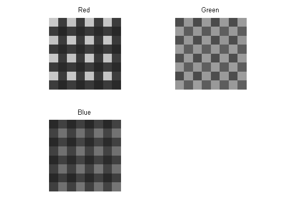
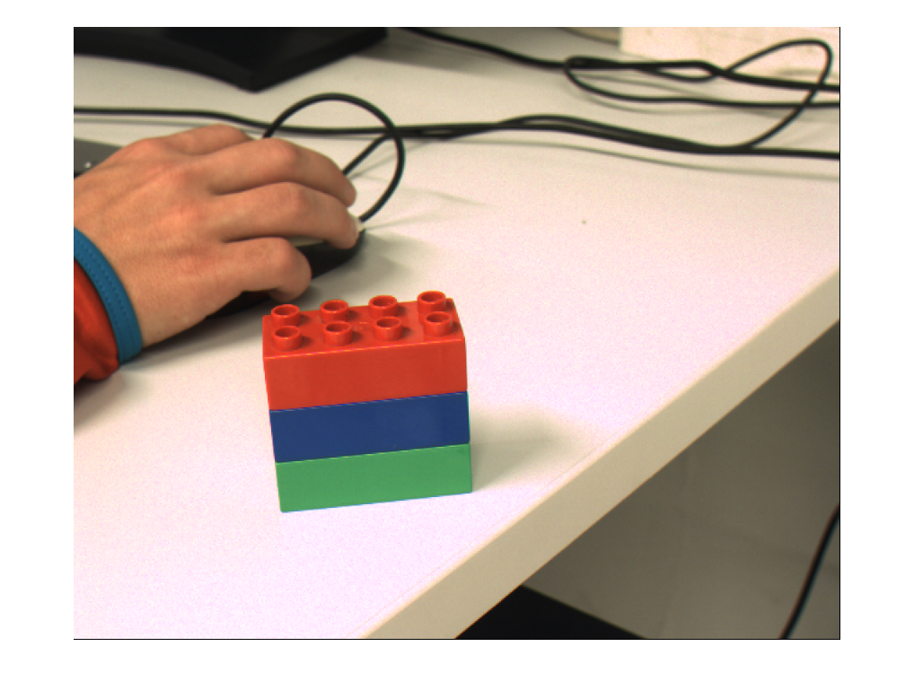

Contents
clear all
close all
clc
read pattern, locate patterns by color
raw = imread('pictures/bayer1.png');
[h, w] = size(raw);
figure;
[c, r, ~] = impixel(raw); close;
c = round(c/8) * 8 +1;
r = round(r/8) * 8 +1;
im_red = raw(r(1)-4:r(1)+3, c(1)-4:c(1)+3);
im_green = raw(r(2)-4:r(2)+3, c(2)-4:c(2)+3);
im_blue = raw(r(3)-4:r(3)+3, c(3)-4:c(3)+3);
figure;
subplot(2,2,1);
imshow(im_red);
title('Red');
subplot(2,2,2);
imshow(im_green);
title('Green');
subplot(2,2,3);
imshow(im_blue);
title('Blue');
Warning: Image is too big to fit on screen; displaying at 67%

pat_red = im_red > mean(im_red(:) );
pat_green = im_green > mean(im_green(:));
pat_blue = im_blue > mean(im_blue(:) );
pat_red = repmat(pat_red, h/8, w/8);
pat_green = repmat(pat_green, h/8, w/8);
pat_blue = repmat(pat_blue, h/8, w/8);
img2 = zeros(h,w,3);
x = 1:w;
y = 1:h;
rawD = double(raw);
img2(:,:,1) = interp2(1:2:w,1:2:h,rawD(1:2:end,1:2:end), x', y);
img2(:,:,2) = interp2(1:2:w,1:2:h,rawD(1:2:end,2:2:end) + pat_green(2:2:end,1:2:end), x', y);
img2(:,:,3) = interp2(1:2:w,1:2:h,rawD(2:2:end,2:2:end), x', y);
figure;
imshow(uint8(img2));
Warning: Image is too big to fit on screen; displaying at 67%
